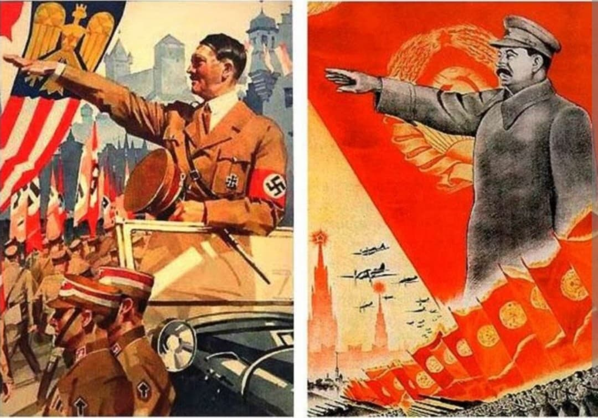
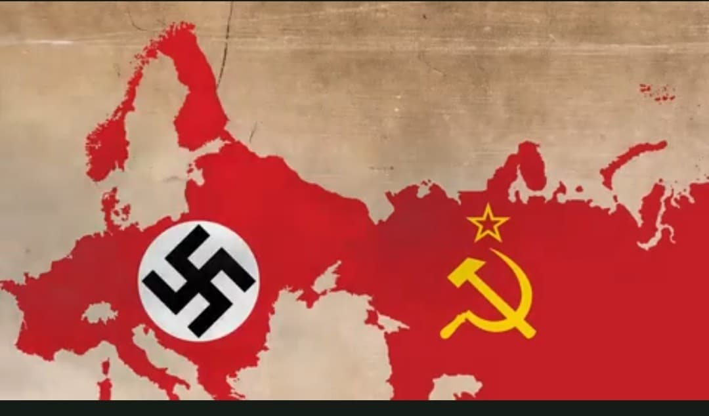
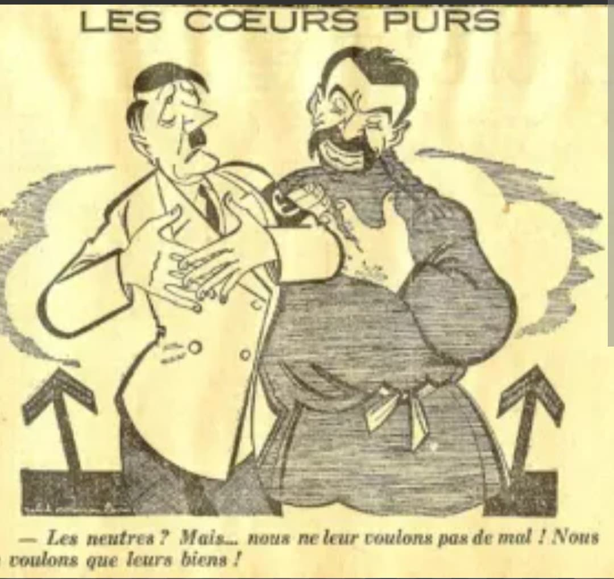
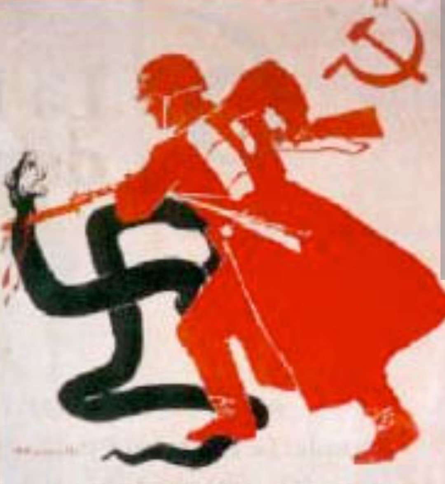

Hitler et Staline
Deux dictatures, deux stratégies
Deux dictatures totalitaires, mais différentes
Hitler et Staline dirigent deux régimes totalitaires : propagande, police politique, parti unique,
élimination des opposants, culte du chef. Mais leurs objectifs, leurs méthodes et leurs visions du monde
sont radicalement différents. Cette fiche compare leurs stratégies pour comprendre pourquoi leur alliance
de 1939 n’était qu’une pause avant un affrontement inévitable.
1. Deux idéologies opposées

Hitler (Nazisme)
- Idéologie raciale (Aryens supérieurs)
- Antisémitisme central
- Conquête territoriale (Lebensraum)
- Destruction du “bolchevisme”
Staline (Communisme soviétique)
- Idéologie marxiste-léniniste
- Industrialisation forcée
- Collectivisation agricole
- Élimination des “ennemis du peuple”
Hitler veut purifier la race. Staline veut transformer la société. Les deux utilisent la violence,
mais pour des buts différents.
2. Deux styles de pouvoir

Hitler : le Führer charismatique
- Pouvoir très personnel
- Décisions improvisées
- Bureaucratie qui “travaille vers le Führer”
- Culte du chef extrême
Staline : le maître de la bureaucratie
- Pouvoir centralisé et administratif
- Décisions froides et calculées
- Terreur organisée par l’État
- Purges massives pour contrôler le parti
3. La violence : deux logiques différentes

Hitler
- Génocide des Juifs (Holocauste)
- Extermination des Slaves “inférieurs”
- Camps de concentration puis d’extermination
- Guerre totale pour conquérir l’Europe
Staline
- Grande Terreur (1937–1938)
- Déportations massives (Goulag)
- Famines provoquées (Holodomor)
- Élimination des opposants politiques
4. Stratégies internationales

Hitler
- Guerre rapide et totale
- Destruction de l’URSS
- Domination de l’Europe
- Pacte germano-soviétique = tactique temporaire
Staline
- Gagner du temps
- Étendre l’influence soviétique
- Pacte germano-soviétique = calcul stratégique
- Préparer une guerre future contre Hitler
5. Barbarossa : le choc final

Le 22 juin 1941, Hitler lance l’opération Barbarossa, l’invasion de l’URSS.
La guerre devient idéologique, raciale et totale. Staline est surpris malgré les avertissements.
C’est l’affrontement direct entre les deux dictatures.
6. Tableau comparatif
| Aspect |
Hitler (Nazisme) |
Staline (Communisme soviétique) |
| Idéologie |
Raciale, antisémite |
Marxiste-léniniste |
| Objectif |
Conquête + purification raciale |
Industrialisation + contrôle total |
| Style de pouvoir |
Charisme, improvisation |
Bureaucratie, planification |
| Violence |
Génocides raciaux |
Purges politiques |
| Politique extérieure |
Expansion agressive |
Expansion prudente |
Page du Musée HOP WW2 – Section Mur de Berlin & Guerre froide